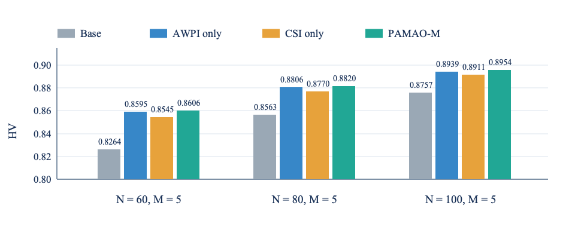

PAMAO: Preference-Adaptive Multi-Agent Optimization
An architecture-agnostic framework for multi-objective multi-agent combinatorial optimization, with agent-wise preference adaptation and collaborative self-improvement.
Abstract
Existing neural solvers for multi-agent combinatorial optimization coordinate the decisions of multiple agents toward a single global objective. In practice, however, applications often involve conflicting objectives, giving rise to multi-objective multi-agent combinatorial optimization (MOMACO). Extending existing multi-objective neural methods to MOMACO is non-trivial because they overlook the multi-agent structure in both decision-making and learning.
We propose PAMAO, an architecture-agnostic framework for MOMACO. Agent-wise Preference Injection (AWPI) contextualizes the shared preference with each agent’s state relative to its teammates, yielding agent-specific queries at each decision step. Collaborative Self-Improvement (CSI) lets each preference subproblem select its supervision from expert solutions in its neighborhood. Experiments evaluate MOMTSP, MOHCVRP, and MOMAFJSP using MACSIM and PARCO-WECA backbones.
- Components
- AWPI · CSI
- Problems
- MOMTSP · MOHCVRP · MOMAFJSP
- Backbones
- MACSIM · PARCO-WECA
Evaluation
We evaluate preference-conditioned solution quality and trade-off coverage on three tasks: multi-objective multiple traveling-salesperson (MOMTSP), multi-objective heterogeneous capacitated vehicle-routing (MOHCVRP), and multi-objective multi-agent flexible job-shop scheduling (MOMAFJSP). The ablation below compares the full method with variants that remove one of its two components.
